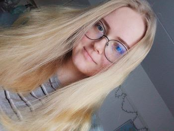

About Me
Bio
I'm Aino, a hardworking software engineering student at LUT University who is enthuastic about learning new programming languages and technologies.
I’m currently studying my second year and looking for work experience in software development.
My dream and career goal is to become a software developer, with the longer-term aspiration of moving into UI design.
Additionally, improving the usability of software is an important topic to me and something I would have passion to work on.
Besides coding and developing software, I enjoy knitting and playing video games. Frisbee golf, badminton and hiking in nature are close to my heart as well.
